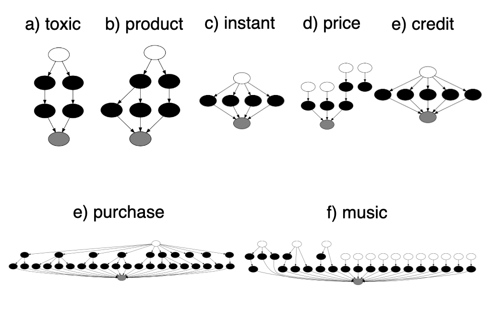
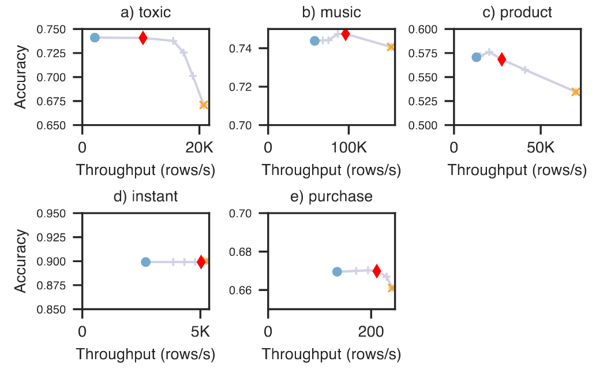
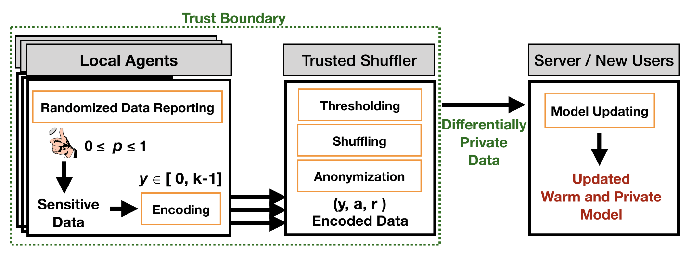

机器学习本质上是一系列的数值计算。当需要计算的数据量很大或者计算模型很大时，就需要设计一个合适的平台来进行这种计算。机器学习系统就是针对此方面的研究，即开发一类特殊的系统，用于支持和部署机器学习模型。
在本篇提前看中，我们从不同的角度选择三篇文章，以求对机器学习与系统（Machine Learning and Systems）领域有多面的了解。其中，第一篇文章对机器学习系统制定了一套具备一般性的工业衡量标准，第二篇文章从模型部署层面对机器学习模型进行加速，主要解决瓶颈是特征计算的问题，第三篇文章则针对一个特定应用场景——大量依赖隐私数据的机器学习任务设计了一个权衡隐私传输与模型效果的系统。
论文列表：
- MLPerf Training Benchmark
- WILLUMP: A Statistically-Aware End-To-End Optimizer For
Machine Learning Inference - Privacy-Preserving Bandits
1. MLPerf Training Benchmark
引言
日趋复杂的机器学习算法和庞大的数据量对真正运行模型的系统提出了一系列的挑战，在这篇文章的工作之前，业界尚未存在一套针对机器学习系统具备工业级别的衡量标准。然而，纵观各个领域的发展，这样的一套标准不仅能起到具有说服力的比较效果，更能促进创新，推动科研和工业界的发展。由此，来自谷歌，百度，斯坦福大学，哈佛大学等众多业界和学界的研究人员共同合作，克服了在衡量机器学习系统的各种独特难题，定义了一套衡量基准MLPerf。
该论文总结分析了衡量训练机器学习的系统的各种挑战，针对各种机器学习任务（如：图像分类，目标检测，机器翻译，强化学习等）给出不同的衡量标准，并附有详细的使用指南。
设计难点
一个训练机器学习的系统的工作流程抽象而言就是：系统输入端接受选定的数据集，优化器，模型，然后在系统上运行该模型直到模型质量（比如：图片分类的精确度）达到预期水平。选择一个系统，便要在训练后的模型质量和系统各方面的表现之间做出权衡。
那么，衡量训练机器学习的系统相较于一般的计算机系统，有哪些独特的挑战呢？
- 系统优化对系统表现与模型质量的不同影响。系统层面的优化可能在短期提高系统的表现性能，却会最终伤害到训练的模型的质量。这就要求，系统必须运行完整个训练过程才能判断模型是否达标，而不能只根据短时间的吞吐量进行优劣评估。
- 并行化训练规模的双重影响。在大型分布式计算场景中，为了增加数据并行度和系统利用率，常常使用大的批量规模（batchsize）。这反过来要求调整模型的优化参数来保证模型性能，比如学习率（learning rate）（可参考文末引用1）。而这些参数的调整却可能对模型训练时间带来负面影响。简言之就是，大批量规模减少了每次训练的时间，却增加了所需的训练次数。
- 模型中的随机性引起的系统表现的差异。即使是相同的模型和超参数，在不同的训练会话（session）中也可能需要不同的迭代次数以达到相同的准确度。这些差异为可信地比较系统表现带来了挑战。
- 不同的软件环境的影响。不同软件框架，不同的数学计算表达，编程界面等诸多因素都可能影响一个系统的表现。
衡量标准
MLPerf的整体思路是，根据不同的机器学习训练任务，让系统运行预先规定的数据集，模型，测量其使训练模型达到特定性能后的训练时间。目前所涵盖的机器学习任务有：图片分类，目标监测，实例分割与目标检测，翻译（循环与非循环神经网络），推荐和强化学习。图示为0.5版本，当前已更新至0.6版本。
为了尽可能排除模型本身的造成的系统表现差异，MLPerf规定了作为测试基准的数据集，模型和标准阈值，同时附有模型的参考实现和超参数设置。
就如何测量训练时间，MLPerf也从测量时间的构成和结合多次测量两个方面给出了详细说明。
- 时间构成方面，系统的初始化时间，20分钟以内的模型创建和初始化时间等不包括在内。
- 由于机器学习任务的训练时间有相当大的随机性，MLPerf 的最终训练结果是由指定多次的基准测试时间在去掉最低和最高值后平均得出的。
提交与结果
MLPerf的测试根据专区和系统类型进行分类。其中，专区有两种：封闭式和开方式。封闭式要求必须使用基准中规定的模型（或与之等价的模型），参数初始化，数据集，超参数等，以求尽可能公平地对比各个硬件/软件系统。开放式的测试专区则侧重于鼓励创新，允许使用不同的模型架构，优化过程等。
系统类型分为三种：可获取类，预览类和研究类。根据软硬件的可获取程度进行区分。做这一类型上的区分也是为了鼓励创新和便于横向比较。后期会增加云系统的测量。
MLPerf测试的最终结果不是一个单一得分，而是系统在各个不同任务中测试的加速比。加速比即模型在该系统下的测试时间与基础系统的测试时间的比值。这一设定考虑到了不同任务的差异悬殊的训练时间。
目前，MLPerf已发布了训练基准0.5和0.6两个版本，来自业界和学界的超过五十个机构参与到了MLPerf测试竞赛中。相信这一标准将会极大促进行业竞赛，激励创新。
2. WILLUMP: A Statistically-Aware End-To-End Optimizer For Machine Learning Inference
论文链接：https://arxiv.org/abs/1906.01974
引言
机器学习作为一种服务正在受到越来越多的关注。随着Amazon的Sagemaker，Microsoft的 AzureML众多机器学习计算平台被人们熟知和使用，机器学习正在成为一项门槛更低，推广度更高的服务。本文专注于机器学习推理中——即模型已经训练完成，将直接用于对新数据进行预测——的系统优化问题。机器学习模型一旦被训练好，实际上就是一个数据转化器：将用户输入经过格式转化，特征计算，模型计算等，最后得到输出预测。推理流水线常直接作为用户端的服务，因此要求低延迟，高吞吐，在负载尖峰时也要保证一定的性能。据研究，在推理服务中，特征计算是一个重要的瓶颈问题。这篇论文设计了一套端到端的推理流水线优化Willump，着力于加速特征计算，增加系统响应性能。
优化流程及原理
Willump提供了两种任务的优化方法：1. 分类预测，2. top-k排名。
级联优化
针对分类任务，Willump采用了一种“区别对待”的思想，即搭建一个级联模型：结合原有模型和一个使用特征更少，计算更快的简单模型。对于每一个新的输入，先对其的部分特征在简单模型上进行快速计算，并根据输出结果的置信度决定是否使用原来的模型进行更为复杂的计算。流程如图所示：左边为原来的模型推理流水线，右边为Willump优化后的流水线。
如何决定从所有的特征中选择哪一部分进行简单模型的训练呢？Willump的目标是选择一部分对预测很重要，但是计算开销又不大的特征。但直接计算所有特征的组合，并评估它们各自模型的精确度显然在计算层面是不可行的。于是，Willump使用了一个trick：
- 首先根据计算独立的要求对所有的特征进行分组。计算独立性可用常规的编译技术解析出数据转换树得到。
- 接着，针对每一组特征，Willump计算两个统计量：计算花销和排列重要性（permutation importance）。后者是用来衡量一组特征对预测结果重要程度的常用方法。
- 最后，设定特征计算所允许的最大开销，从独立的特征组中选取使排列重要性和最大的组合。这就将原目标转化为一个knapsack问题，可用动态规划进行求解。
Top-K优化
针对Top-K排名问题，Willump依然采取“区别对待”的思想：主要资源用于计算可能性大（排名可能更靠前）的对象，少数资源用于计算可能性小的对象。实现起来就是：Willump首先训练一个近似的模型，用于快速过滤掉得分低的对象，再把未被淘汰的对象送给原模型进行评分，对它们进行排名，从中得到Top K。
如何训练一个近似的模型呢？Willump依然试图确定一部分“最优的特征”，并在这组特征上训练一个近似的模型。不同于前述方法，这里”最优“的定义有所变化。给定一个Top K预测的准确率要求，给定一部分特征，可以计算出在这部分特征上多大的数据量（设定为N）能以预设的准确率覆盖Top K。最优意味着N/K的值最小。直观上说，就是没被这组特征过滤掉的数据量尽可能地少，尽可能地接近K。当然，在搜索特征组的时候，依然以最大的计算开销为限制进行搜索。
总体而言，Willump的工作流程包括三个阶段：
- 数据流阶段：将原有的机器推理流水线转化为转换图。
- 优化阶段：使用级联/Top-K的优化方法。
- 编译阶段：将优化后的图转化会程序函数，交给Weld等优化系统进行编译。
实验结果
论文针对级联优化和Top-K优化分别进行实验，使用系统吞吐量，延迟和模型的准确度进行结果衡量。
实验使用了七种不同的数据集，分别来自数据科学竞赛平台CIKM, Kaggle和WSDM。数据集包括分类与回归两个类别，所用的机器学习模型包括：线性模型，GBDT，Ensemble和NN。
表格显示了数据集的详细信息，图片给出了特征与输入间的计算依赖关系。

级联优化
级联优化针对前五个分类任务的数据集，在Weld平台上进行编译，对比展示了Python源代码的吞吐量和延迟，直接用Weld平台编译后的吞吐量和延迟，以及Weld+Willump优化后的吞吐量和延迟。同时，给出Willump选定的特征组优化的模型精确度。

综上，在精确度损失0.1%的范围内，级联优化的吞吐量相较于原Python程序最高达到16倍加速，相较于经Weld优化后的程序，仍可达到最高5倍的加速。级联优化的延迟也有显著减小。
Top-K优化
在Top-K优化的实验设置中，K设定为20，覆盖精确度设定为95%，使用的编译优化平台为Clipper。吞吐量优化结果如图所示。
小结
Willump针对机器推理流水线中的特征计算进行优化，它开创性地利用了特征对模型结果影响的统计信息，通过结合更简单的模型和原有模型，在分类问题和Top-K问题上展示出系统吞吐量和延迟上的显著改善。它是一个位于Python端与编译平台中间的优化方法，在多个编译优化平台上均取得显著提升效果。
3. Privacy-Preserving Bandits
论文链接：https://arxiv.org/abs/1909.04421
引言
在计算广告和推荐系统领域，一个典型应用是针对用户进行个性化推荐。用多臂赌博机模型来描述这个问题，就是将每一个待推荐的物品看作一个赌博机，在将此推荐给这个用户前，并不知道会获得多大的收益。那么每次推荐时，该如何选择一个赌博机呢？更进一步，如果考虑到不同用户具有不同特征，即同一个物品推荐给不同的用户会带来不一样的收益，又该怎样设计算法来最大化收益呢？这类问题被抽象为与情景有关的赌博机（contextual bandit）问题。LinUCB算法是解决这类问题的一个典型算法，它利用了用户特征和物品特征，训练模型进行推荐。收集到越多的用户数据，越有利于模型进行更精确，收益更高的推荐。
但是，在这个面向诸多个体的问题情境中，又涉及了一个重要的研究课题：隐私保护。很多情况下，为了保护用户数据的隐私，并不能将每个终端模型的数据信息全数汇总，以更新模型参数（比如：物品的特征）。最大化收益要求尽可能多的用户数据，隐私保护又限制了用户数据的传输。如何在隐私保护与模型效果中间权衡取舍就是本论文研究的中心问题。
本论文提出了一个系统P2B（privacy-preserving bandits隐私保护赌博机）。该系统能在用户本地端运行，并能使中心模型通过特定的方式收集各个用户端的数据，同时提供一定程度的隐私保证。
P2B系统架构和原理分析
P2B系统的主要架构是：
- 本地代理对用户的数据进行加密，并选择性地上传，
- 洗牌机（位于用户端和中心服务器之间）：收集一定数量的加密后的用户数据，进行匿名化处理，重新洗牌，并将达到阈值数量的数据上传到中心服务器。
- 中心服务器：利用洗牌机发来的数据进行模型更新，并将更新后的模型发回各个本地用户端。
详情如图所示：
在整个系统中，为了保证用户隐私，作者设计了多个精巧的操作。
- 本地代理随机地上传数据。更准确地说，对于每一条加密后的用户数据，本地代理以概率p决定上传该数据。概率值p直接影响到模型最后的效果。参考差分隐私的定义，直观上说，即当输入数据集中的一个数据点发生改变时，模型输出会发生多大的改变。
- 本地编码方式：先将原有的d维用户特征向量归一化，用精度为q的数字表示，并将编码后的向量通过k-means聚类到k个类中，用{0,…,k-1}进行编码表示。这一操作可以让相似的用户有相同的编码。
- 洗牌机选择上传超过给定阈值数量l的编码数据。这一阈值的选择保证了群体混合隐私。
对隐私分析的理论结果如图：
对于上述$\epsilon$和$\sigma$直观上的理解是：对于所有与原数据集相邻的数据集（有一个数据点不同），以$1-\delta$的概率保证隐私的绝对损失在$\epsilon$限制内。
实验结果
论文中共设置了三种实验模式：冷启动（百分百隐私保证），热启动+无隐私（用户上传全部数据）和热启动+隐私（P2B系统的应用，用户上传部分编码后的隐私数据）。分别在多标签的分类任务和在线广告场景中进行对比实验。其中分类任务采用准确率作为衡量标准，在线广告场景中采用点击通过率（CTR）作为衡量标准。实验所使用的采样概率p为0.5.
上图展示了在用户可采取的行为数量（A）不同的环境下，平均回报与系统参与用户的数量的关系。可以看出，在冷启动（用户不分享数据的情况下），模型的平均回报与用户数量无显著关系。而在热启动的情况下，二者存在显著的正相关。